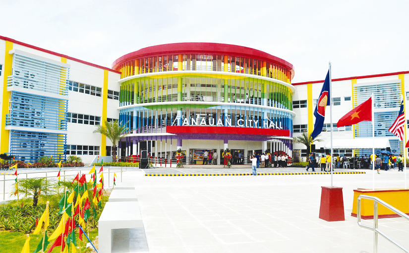

The Cradle of Noble Heroes

The administrative hub of the local government, providing public services to the community.

Showcasing the rich heritage of the Tanaueños and preserving historical artifacts.

Also known as St. John the Evangelist Parish Church, a perfect destination for spiritual enrichment.

The late president's ancestral house built in 1880, showcasing historical furniture and personal effects.
A tribute to hero Apolinario Mabini, located in Barangay Talaga, Tanauan.
The late president's ancestral house built in 1880, showcasing historical furniture and personal effects.

The Parade of Lights is a colorful festival celebrated annually every March, showcasing the brightest and most festive parade in Tanauan City.
Tanauan City, the City of Colors, is a first-class city in Batangas, Philippines. Known as the "Cradle of Noble Heroes," it is the birthplace of Apolinario Mabini and José P. Laurel. The city blends historical heritage with modern growth, making it a cultural and economic hub in the region.